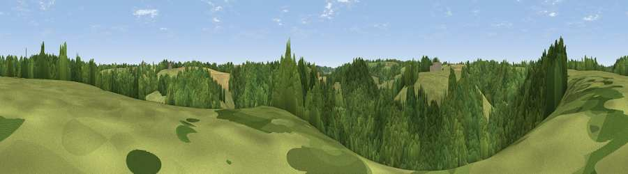

Viewpoint near Castle Combe
#43918 in England · top 90% of its area beats it · near Castle Combe · path 79 mWhere it is
The exact computed spot (ST 84475 75275). Click the marker for map links.
Public access: the nearest public right of way is about 79 m away — the final stretch may cross private land. Computed from Natural England's CRoW access layer and OpenStreetMap rights of way — not the legal definitive map. Always verify locally.
The view, rendered

A 360° render of this exact spot computed from the terrain model, tree cover and land cover — summer colours, afternoon light, calibrated against photographs of famous viewpoints. Real trees, hedges and buildings will differ in detail.
The panorama
Grey silhouette: terrain skyline in each direction (720 bearings, Earth curvature and refraction included). Dashed green: skyline with trees (+15 m) and buildings (+8 m) as obstacles. Blue strip: how far the ground is visible on each bearing.
Where the view opens
Wedge length = distance to the farthest visible ground on that bearing (vegetation-aware). Rings at 10, 25 and 50 km.
What fills the view
61% woodland · 35% grassland · 5% cropland
Angular shares of the visible panorama (visual magnitude), not map area. Landscape diversity 0.36 (0–1 Shannon).
Key numbers
More beautiful places nearby
The staircase of upgrades: each row has a higher view potential than everything closer. Driving times are estimates from straight-line distance, calibrated against real road routing — check an actual route before setting out.
| Place | Direction | Drive | Score |
|---|---|---|---|
| Viewpoint near Castle Combe | N · 1 km | ~4 min | 25.9 |
| Viewpoint near North Wraxall | SSW · 2 km | ~6 min | 39.0 |
| Lan Hill | ESE · 4 km | ~8 min | 44.9 |
| Viewpoint near Colerne | SW · 6 km | ~12 min | 45.5 |
| Viewpoint near Ashley | SW · 7 km | ~15 min | 52.7 |
| Viewpoint near Marshfield | WSW · 9 km | ~18 min | 56.6 |
| Viewpoint near Hinton | WNW · 10 km | ~19 min | 65.8 |
| Viewpoint near Horton | NW · 12 km | ~23 min | 66.9 |
51.47622, -2.22493 · source: screening · position refined by local search. Computed location — check access rights before visiting.